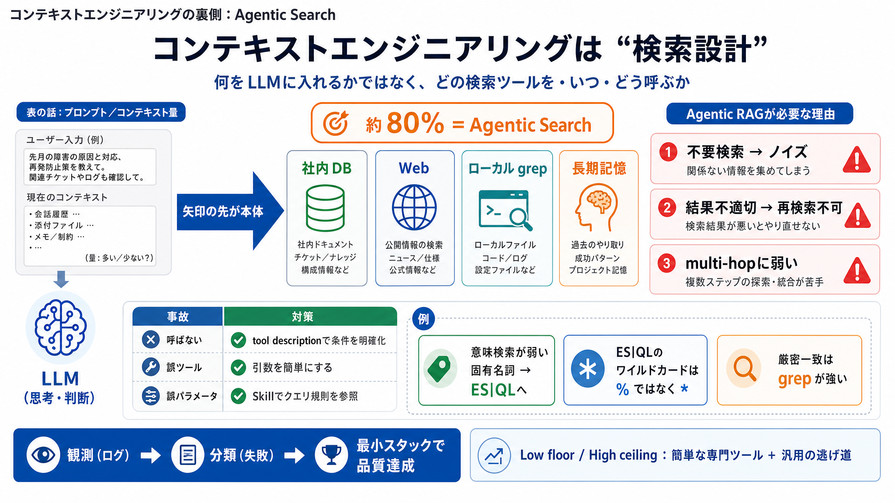

表の話
プロンプト／コンテキスト量（コンテキストウィンドウ）

コンテキストの裏側
なぜコンテキストエンジニアリングは「ほとんどエージェントによる検索」なのか (Agentic search / エージェント型検索)
見落としポイント
コンテキストエンジニアリングは「LLMに何を入れるか」に見えますが、実装上の主戦場は「どの検索ツールを、いつ呼ぶか」です。
矢印の先
コンテキスト入力の「矢印」の先には、状況に応じて選べる検索ツール群があります。品質はツール設計と呼び出し制御に支配されます。
主張の核
講演者の持論は、コンテキストエンジニアリングは約80%が agentic search（エージェントによる検索）だ、というものです。
なぜ進化した
固定の検索パイプライン（1回だけベクトル検索）だと、ノイズ・行き止まり・multi-hop不能が起きやすいため、エージェントが再検索判断できるようにします。
典型失敗
ツール周りの現実は、(a)ツールを呼ばない、(b)間違ったツールを選ぶ、(c)正しいツールでも引数が間違う、に整理できます。
設計で潰す
対策は「tool descriptionの条件付き設計」「引数難度の低減」「必要ならスキルロード（クエリ規則の参照）」です。
使い分けの例
Elasticsearchの意味検索（セマンティック検索）は「GEPA」のような曖昧・固有名詞系に弱く、そこで汎用的な ES|QL クエリへ切り替えます。
仕様差を吸収
SQL習慣の「%」ではなくES|QLでは「*」が必要など、言語仕様差が失敗要因になります。スキル参照で回避します。
脱線しない道
シェルツール（bash tool / shell tool）でローカルファイル探索（grep等）を行うと、「シェル＝万能」ではないにせよ厳密一致領域で非常に強いです。
勝ち筋
検索スタックは「低い床＝パラメータ簡単な専門ツール」と「高い天井＝汎用の逃げ道」を分け、ログと失敗観測で専門化していきます。
要点まとめ
コンテキストを良くするとは、実際には「agentic searchで、適切なツールと引数を選び続ける」ことです。 観測（ログ）→分類（失敗）→最小スタックで品質達成を目指しましょう。
No references found